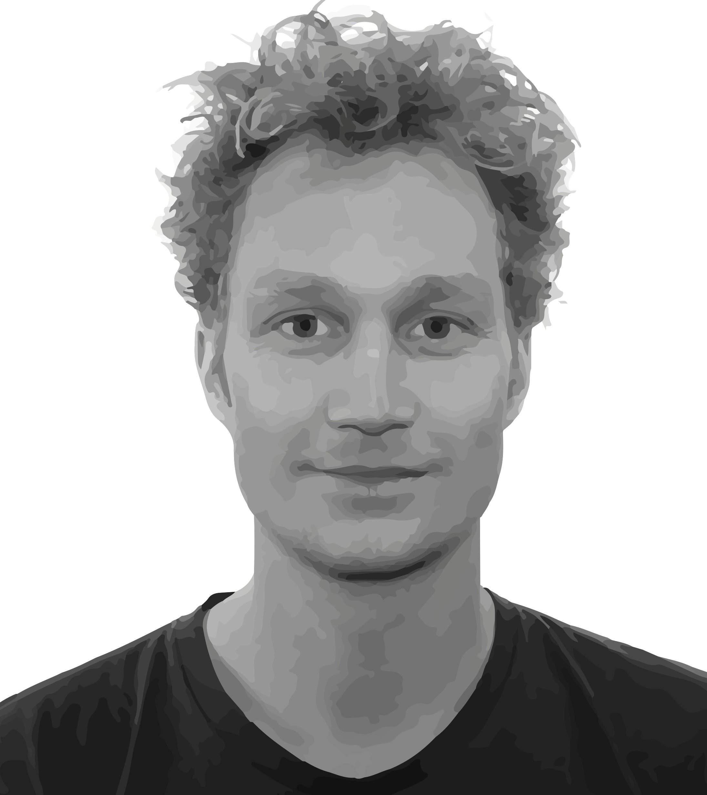

Contact
Insect-Virus Interactions Unit
Department of Virology
Institut Pasteur
28 rue du Dr. Roux
Paris, France
Center for Research and Interdisciplinarity
8bis rue Charles V
Paris, France
Academic Bio
I received my PhD in Biophysics from Delft University of Technology (the Netherlands) using microfabrication to study spatial aspects of bacterial cooperation, colonization, and competition working with Cees Dekker and Juan Keymer. After defending my PhD, I did a short postdoc joint between the labs of George Whitesides (Harvard University) and Cees Dekker (Delft). Subsequently, I changed my focus from bacteria to mosquitoes and moved to Stanford University to work with Manu Prakash on several problems related to mosquito ecology and viral evolution, first as a Rubicon fellow and later as a BWF CASI fellow. Currently, I am a Marie Curie fellow at the Insect-Virus Interactions Unit at Institut Pasteur working with Louis Lambrechts, and starting as a long-term fellow at the Center for Research and Interdisciplinarity (CRI-paris). He develops new technologies to study mosquito biology and leverages these tools to understand the internal and external drivers of mosquito behaviors that are relevant to pathogen transmission.
